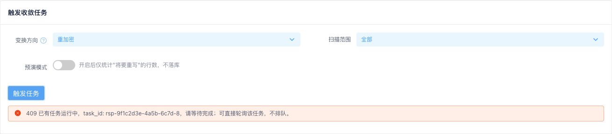
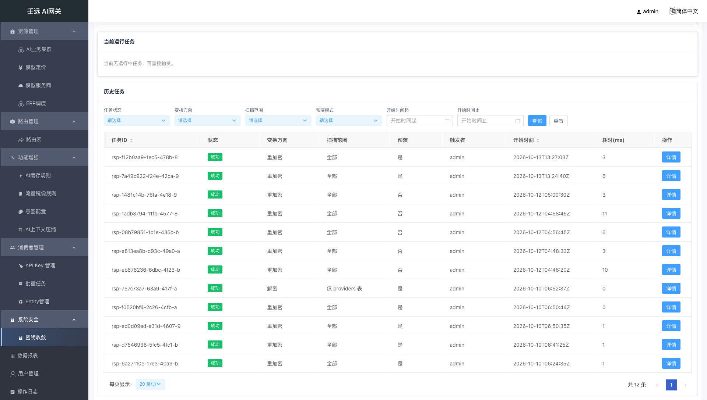
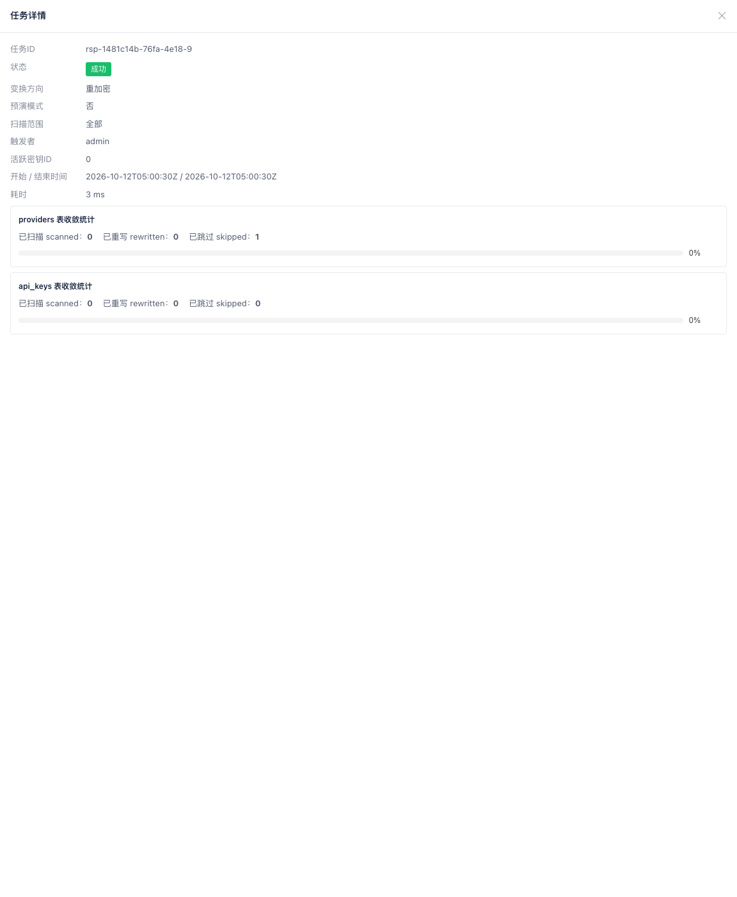
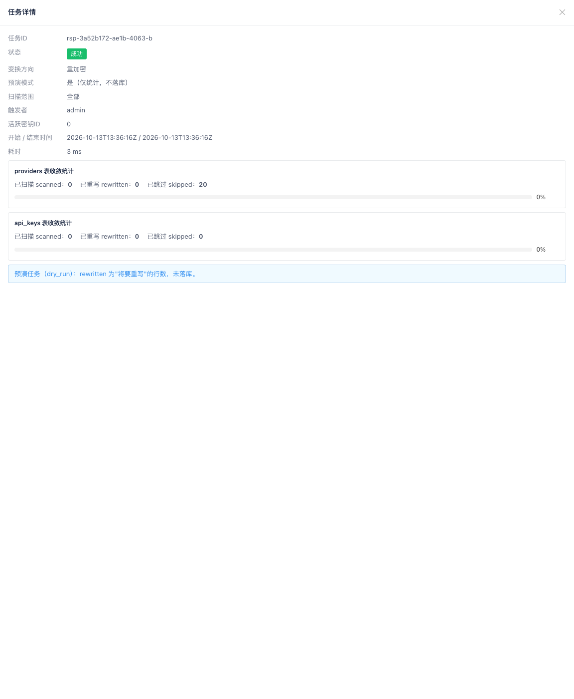

20 系统安全：密钥收敛
入口：侧栏「系统安全 → 密钥收敛」（路径 /security）。
密钥收敛用于对网关库内的敏感密钥列（服务商的服务鉴权 Key 所在 providers 表、API Key 所在 api_keys 表）执行批量的重加密 / 解密，使历史数据向当前加密形态（keyring 的 active 钥）收敛。任务异步执行：点击触发后立即返回并进入运行中状态，进度由页面按 800 毫秒轮询展示，完成后统计与耗时落库。历史任务记录服务端持久化、无过期清理，可按状态、方向、范围、预演与时间翻查。
页面为单页三卡片结构，无页签：
- 触发收敛任务：变换方向、扫描范围、预演模式三个参数 + 「触发任务」按钮
- 当前运行任务：展示由列表识别出的唯一运行中任务与其进度
- 历史任务：筛选栏 + 服务端分页表格
点击历史表格中的「详情」，从右侧滑出 60% 宽的「任务详情」抽屉（点击遮罩或右上角关闭图标关闭）。
本模块属系统运维 / 安全类功能，需具备 FeatureSecurity（scope=System）权限的账号访问：无读权限时列表接口返回 402（Feature Access Deny），页面无法加载；无权限时菜单也不会出现。触发与查询接口本属同一功能权限，另分写（update）/ 读（read）两类动作。
20.1 触发收敛任务
页面顶部第一张卡片即触发区，可调参数：
| 字段 | 必填 | 默认值 | 校验规则 | 说明 |
|---|---|---|---|---|
变换方向（mode） | 否 | reencrypt（重加密） | 仅 reencrypt / decrypt 两枚举 | reencrypt：明文行或旧 keyID 密文行重写为 active 钥密文；decrypt：全部密文行解密为明文，仅用于回滚预案，日常禁止触发 |
扫描范围（scope） | 否 | all（全部） | 仅 all / providers / api_keys 三枚举 | providers 只扫服务商表、api_keys 只扫 API Key 表；下拉选项文案为「全部 / 仅 providers 表 / 仅 api_keys 表」 |
预演模式（dry_run） | 否 | 关闭（false，即「否」） | 布尔开关 | 开启后走 Switch 右侧提示「开启后仅统计"将要重写"的行数，不落库」，不写库 |
- 「变换方向」标签右侧有蓝色帮助图标，悬停显示两个枚举的完整语义（含「日常禁止触发」提示）。
- 点击「触发任务」发起触发：按钮进入加载态，成功后弹出提示「任务已触发，task_id: {id}，轮询进度中」，页码复位为第 1 页并重新加载列表（新任务以「运行中」出现在列表首位），同时开始轮询该任务。
- 界面下拉为固定枚举，不存在非法值；绕过界面直接调接口传非法
mode/scope时返回 422（字段级归因）。 - 集群级单例互斥：已有任务运行时触发会被拒绝，按钮下方出现红色提示条「409 已有任务运行中，task_id: {id}，请等待完成；可直接轮询该任务，不排队。」，并同时弹出同义提示；页面不排队，转而直接轮询该持有者任务。

只读视角：以「系统管理员（只读）」（
role = system_admin_readonly）登录时，本卡片的「触发任务」按钮被隐藏——页面上不存在任何可发起触发（POST /security/reencrypt-sweeps）的入口；三个参数的控件与说明仍可见，但无法提交。历史列表、筛选栏、分页与「详情」抽屉全部保留只读查看能力（见 1.2.6 只读视角）。
20.2 当前运行任务
第二张卡片展示唯一的运行中任务，数据来自任务列表（status=running 项）；列表中没有运行中任务时显示「当前无运行中任务，可直接触发。」，且不发起轮询。
- 只要存在运行中任务，页面每 800ms 轮询一次单个任务查询接口（路径参数为该任务的
task_id），按task_id就地更新列表行、本卡片与已打开的详情抽屉，不重置筛选条件、页码与排序，也不关闭抽屉。 - 卡片内容与「任务详情」一致（字段见 20.4 任务详情），状态 Tag 后额外显示蓝色「轮询中…」文本。
- 运行中任务的统计与耗时尚未落库，卡片上耗时显示
-、统计区显示占位「任务运行中，统计将于完成后写入。」（不显示递增计数，也不显示0 ms）。 - 任务进入终态（成功 / 失败）后停止轮询、清空本地运行中对象，并立即重新拉取列表使统计与耗时落定，该卡片随之回到空态（或切换到下一个运行中任务，如果有）。
20.3 历史任务列表
第三张卡片由筛选栏与服务端分页表格组成：

筛选栏
任务状态、变换方向、扫描范围、预演模式四个下拉（默认项均为「全部」，不参与过滤），以及「开始时间起」「开始时间止」两个日期时间选择器（格式 yyyy-MM-dd HH:mm:ss，含边界），右侧为「查询」「重置」按钮。任一筛选项变更即自动重查列表并将页码复位为第 1 页；「查询」用于手动重查；「重置」清空全部筛选项、排序回落默认（started_at 倒序）并复位页码。
| 筛选项 | 对应接口参数 | 可选值 |
|---|---|---|
| 任务状态 | status | 全部 / running（运行中）/ succeeded（成功）/ failed（失败） |
| 变换方向 | mode | 全部 / reencrypt / decrypt |
| 扫描范围 | scope | 全部 / all / providers / api_keys |
| 预演模式 | dry_run | 全部 / 是（true）/ 否（false） |
| 开始时间起 | start_time | 按下界（含）过滤 started_at |
| 开始时间止 | end_time | 按上界（含）过滤 started_at；早于起始时间时后端 422 归因 |
表格列
| 列名 | 说明 |
|---|---|
| 任务ID | task_id，原样完整展示；列头可排序 |
| 状态 | Tag 展示：运行中（蓝色）/ 成功（绿色）/ 失败（红色） |
| 变换方向 | reencrypt → 重加密、decrypt → 解密 |
| 扫描范围 | all → 全部、providers → 仅 providers 表、api_keys → 仅 api_keys 表 |
| 预演 | dry_run → 是 / 否 |
| 触发者 | created_by，未识别触发者时为空串，显示 - |
| 开始时间 | started_at，为空显示 -；列头可排序 |
| 耗时(ms) | 运行中显示 -（尚未落库）；终态显示实际毫秒数（0 也照实显示） |
| 操作 | 「详情」按钮，打开任务详情抽屉 |
- 运行中任务同样出现在列表中，其统计 / 耗时 / 结束时间为库内已落库值（即空值与 0）。
- 分页为服务端分页：默认每页 20 条，可切换 20 / 50 / 100，底部展示总条数与页码，总数取过滤后的总记录数。
- 列头排序仅「任务ID」与「开始时间」提供（其余列不显示排序箭头）；若以其它列名发起排序请求，后端会忽略并回落为默认的
started_at倒序。默认按开始时间从新到旧。 - 列表为空（含筛选无命中）时展示空态「暂无历史任务。」，不渲染表格。
20.4 任务详情
点击列表操作列「详情」打开右侧 60% 宽抽屉，标题为「任务详情」；运行中任务的横幅卡片复用同一套字段布局。

字段按固定顺序展示：
| 字段 | 必填 | 默认值 | 校验规则 | 说明 |
|---|---|---|---|---|
任务ID（task_id） | —（系统生成） | rsp-… 前缀 | 非空 | 轮询与详情查询的路径参数 |
状态（status） | —（系统维护） | 触发后为 running | running / succeeded / failed | 运行中时状态 Tag 后附「轮询中…」 |
变换方向（mode） | — | 同触发入参 | reencrypt / decrypt | 界面显示「重加密 / 解密」 |
预演模式（dry_run） | — | 同触发入参 | true / false | 界面显示「是（仅统计，不落库）/ 否」 |
扫描范围（scope） | — | 同触发入参 | all / providers / api_keys | 决定下方渲染哪几张统计块 |
触发者（created_by） | —（系统记录） | 未识别时为空串 | 字符串 | 空串显示 -；触发（POST）响应不含该字段 |
活跃密钥ID（active_key_id） | —（系统记录） | decrypt 模式为 0 | 0–255 整数 | 任务启动时 keyring 的 active 钥，可用于核对「重写目标钥」 |
开始 / 结束时间（started_at / finished_at） | —（系统维护） | 运行中 finished_at 为空 | RFC3339 时间串 | 界面以「开始 / 结束时间」一行展示，空值显示 - |
耗时（duration_ms） | —（完成时写入） | 运行中为 0 | ≥0 整数 | 运行中显示 -；终态显示 {ms} ms |
统计（summary） | —（完成时落库） | 运行中为空对象 {} | 按表分组：providers / api_keys，各含 scanned / rewritten / skipped | 运行中显示占位「任务运行中，统计将于完成后写入。」 |
错误（error） | — | 空串 | failed 时为归因错误；预演成功任务固定为 dry_run | 不含任何密钥或密文材料 |
统计块
统计按扫描范围渲染，一次最多两张：
- providers 表收敛统计：
scope为all/providers时展示 - api_keys 表收敛统计：
scope为all/api_keys时展示
每张统计块包含三个计数与一条进度条：
| 计数 | 说明 |
|---|---|
已扫描 scanned | 已扫描的行数 |
已重写 rewritten | 已重写的行数；预演模式下为「将要重写」的行数 |
已跳过 skipped | 已是目标形态的行数（reencrypt：已是 active-keyID 密文；decrypt：已是明文） |
进度条表示「已扫描」在「已扫描 + 已跳过」中的占比（scanned / (scanned + skipped)），两者之和为 0 时进度为 0。
错误与预演提示
抽屉底部按 error 分三种情况，互斥展示：
error = dry_run：预演任务的成功语义标记，以浅蓝底提示展示「预演任务（dry_run）：rewritten 为"将要重写"的行数，未落库。」，不走红色告警- 其他非空
error（如executor lost，表示执行实例失联被接管）：红色告警条展示「错误：{error}」 error为空：不展示任何提示

只读视角：详情抽屉为纯只读内容，只读角色可完整查看任务字段、统计块与错误 / 预演提示，与系统管理员视角一致；抽屉内不存在任何写操作按钮。
20.5 注意事项
decrypt只用于回滚预案：该方向会把全部密文行还原成明文，日常禁止触发；一旦使用，任务详情中的「活跃密钥ID」显示为0（不代表第 0 把钥）。- 预演的「已重写」不是真写入：
dry_run开启时rewritten表示「将要重写」的行数，库内密文形态不变；预演任务完成后状态是成功、error固定为dry_run，页面用蓝色提示而非红色告警——看到红色「错误：dry_run」式的理解是错的。 - 运行中任务的 0 与空值不是真实结果：运行中
summary为空对象、duration_ms为 0、finished_at为空，页面统一显示占位文案与-；不要据此判断「耗时 0 毫秒」或「统计为 0 条」，等状态翻转为成功 / 失败后再看统计。 - 集群级单例互斥且不排队：任一时刻只允许一个收敛任务运行。运行中重复触发直接返回 409，提示中带持有者
task_id，页面转为直接轮询该任务；没有队列，也不必反复点击「触发任务」。 - 只有两列能排序：列表排序字段仅「任务ID」与「开始时间」，其余列即便发起排序请求也会回落为默认的开始时间倒序；时间过滤按开始时间，上下界均含，结束早于开始时由后端返回 422 并由拦截器做字段级归因（页面不再重复弹出「加载任务失败」）。
- 幂等与接管：任务完成后可重复触发，重触发后统计为
rewritten=0即表示已收敛；若执行实例失联，后续触发会自动接管，旧任务被标记为error = executor lost的失败任务。历史记录持久化保存、无过期清理，只读角色也能长期翻查。